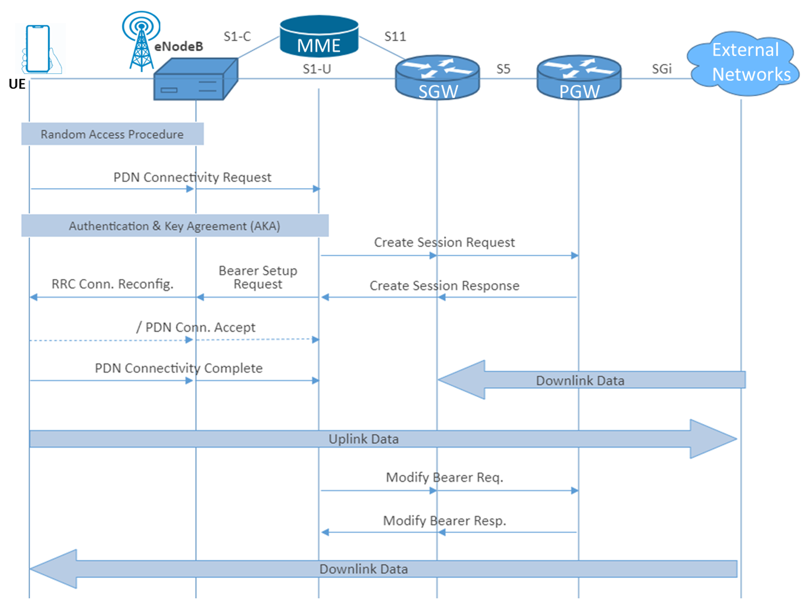
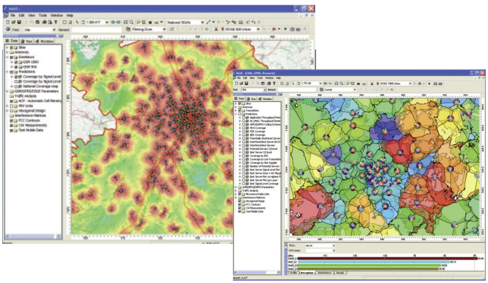

Optimization
actions require the analysis of data inputs with the objective to detect
malfunctioning elements and recommend and implement changes in the network to
fix detected issues.
Figure 4
shows an overview of which Optimization data sources are most often used as
part of the different Optimization Use Cases:
Figure 4. Data Inputs for Optimization Use Cases
RAN
performance information is collected from radio access NEs (2G BSCs, 3G RNCs,
4G eNBs, 5G gNBs). RAN performance is a vital input for most optimization Use
Cases, although there are few scenarios in which RAN performance is not that
meaningful, being the following some examples:
- Initial deployment of
greenfield networks are networks with few users in the initial phases of
deployment. In this case the performance indicators obtained from the network
are not meaningful enough and other inputs would be preferred (Drive tests)
- The same comment applies to
the introduction of new technologies (5G or VoLTE as examples) where the
penetration of users with devices capable to support these technologies is low.
It's
relevant to note that while the usage of real time performance indicators is
very much relevant for Use Cases such as Performance Degradation/Service
Assurance, there are other Use Cases that also rely on historical performance
information. This is the case when developing optimization plans for Use Cases
such as special events
It's
important to differentiate between performance measurements (PMs) and
performance indicators (PI/ KPI). PMs are triggered and collected at RAN Nodes
when specific events occur (as an example the reception of a specific message
from a UE, or the lack of reception of the same message when it's expected to
be received). KPIs are formulas that use PMs to determine network performance
in specific areas (availability, accessibility, retainability, mobility,
integrity, traffic, capacity utilization are examples of these areas). These
formulas are usually recommended by OEMs and followed by operators with some
minor modifications.
PMs
(also known as Performance Counters) values are stored every Reporting Output
Period (ROP) with a typical granularity of 15 min. Performance counters are
then aggregated by performance reporting tools to generate aggregated
information with different time scopes (daily, monthly, weekly) and different
geographical scope (by city, province, region or network).
It's
recommended to the NaaS operator to use tools to automate the activities of
collection and processing of the performance files, and if possible, automate
also the real time detection of RAN performance degradations (i.e., deviations
from established thresholds). Please refer to section 5.1.1 for more
information on RAN performance tools.
4.1.1
KPI Targets
KPI
Target tables are used to define the thresholds that will trigger optimization
actions. These tables show target values at different levels of the network
(cell. Node, BSC, RNC) and typically also show different criteria for different
levels of aggregation.
Table 2
shows an example of KPIs that are grouped by Analysis Areas:
- Retainability: Drop call rate
(DCR) KPIs for Voice and Data services
-
Accessibility: Call setup success
rate (CSSR)
KPIs, Paging KPIs for Voice and Data services
-
Mobility: Handover (HO) KPIs ' Intra-RAT and Inter-RAT (Radio
Access Technology)
-
Traffic: Traffic Volume KPIs
(Voice (2G, 3G, VoLTE) and Data (2G, 3G, 4G)
-
Integrity: Throughput KPIs
(DL/UL values for 2G, 3G, 4G)
-
Other KPIs (like
multiple-input and multiple-output (MIMO) and Carrier Aggregation Usage)
The table indicates reference threshold values to trigger
optimization activities:
- Cell KPIs - Indicates the threshold KPI value at the Cell
level that would be used to highlight and create a list of worst-performing cells (see section
4.1.2). The deviation would trigger optimization activities: depending on the
deviation severity, the analysis would be done the first day that the cell
becomes deviated or after several days of being included in the Worst Offenders
List. Cell level thresholds should be met considering the bouncing busy hour
(BBH), which is the hour with the maximum traffic for a particular cell within
a 24 hours period. In addition, the percentage of cells in the network that
should comply with the threshold is provided. As an example, 2% is the target
4G_DCR_PS value for a specific cell; however, it's also specified that at least 99% of the cells are above
this value
- Network KPIs - These aggregated values indicate thresholds that represent target values to be achieved by the aggregation of
events of all the cells in the network. Network KPI
thresholds should be met considering the network busy hour (NBH) which is the
hour of the day when the whole network is the busiest.
- Relative Thresholds - Some KPIs (e.g., traffic, throughput) can
have wide variability between the cells in the network. For these ones,
Relative Thresholds are indicated. As an example, a cell should be reviewed if the variation in traffic between two consecutive days is greater than 20%.
|
GROUP
|
KPI
|
Cell KPIs (based on BBH)
|
Network KPIs
(based on NBH)
|
|
Threshold
|
% of Cells
|
|
DCR
Voice
|
2G_DCR
|
1.5%
|
98%
|
0,75%
|
|
3G_DCR
|
1.5%
|
98%
|
0,5%
|
|
4G_DCR_CS
(VoLTE)
|
1.0%
|
98.50%
|
0,75%
|
|
CSSR
Voice
|
2G_CSSR
|
97%
|
99.0%
|
98%
|
|
3G_CSSR_CS
|
98%
|
99.0%
|
99,5%
|
|
4G
CSSR CS (VoLTE)
|
|
CSSR
Data
|
2G_CSSR_DATA
(GPRS_CSSR)
|
95%
|
99.0%
|
98%
|
|
3G_CSSR_PS
|
97%
|
99%
|
99,25%
|
|
4G_CSSR_PS_Success_Rate
|
|
DCR
Data
|
3G_DCR_PS
|
2%
|
99%
|
1%
|
|
4G_DCR_PS
|
|
Paging
|
CS
Paging Success (2G/3G/4G)
|
90%
|
99%
|
90%
|
|
2G
Data Paging Success
|
99%
|
90%
|
|
3G
Data Paging Success
|
99%
|
90%
|
|
4G
Data Paging Success
|
99%
|
|
Mobility
(HO)
|
2G_HO_Success_Rate
(Intra-GSM)
|
95%
|
98%
|
98%
|
|
HO_3G3G
(SHO Speech)
|
98%
|
99%
|
|
HO_3G3G
(HHO Speech)
|
98%
|
|
IRAT_HO_3G2G_speech
|
|
HO_2G3G_Speech
|
97%
|
|
HO
Preparation Success 4G/3G
|
97%
|
99%
|
99%
|
|
HO
Execution Success 4G/3G
|
98.5%
|
98%
|
|
4G:
CSFB Succ Rate
|
|
4G:
IntraLTE HO SuccRate
|
98%
|
99%
|
99%
|
|
4G:
IntrafreqLTE VoLTE SuccRate
|
|
4G:
InterfreqLTE VoLTE SuccRate
|
|
CSFB
Attempts to 3G
|
Analyze
if daily variation > 50%
|
|
|
|
CSFB
Attempts to 2G
|
|
Traffic
Volume
|
2G_Speech_minutes
|
Analyze
if daily variation > 25%
|
|
|
|
3G_Speech_minutes
|
|
4G
VoLTE Downlink Volume
|
|
4G
VoLTE Uplink Volume
|
|
4G
VoLTE_Speech_minutes
|
|
2G
DL Data traffic (KB)
|
Analyze
if daily variation > 25%
|
|
|
|
2G
UL Data traffic (KB)
|
|
3G
DL Data traffic (MB)
|
|
3G
UL Data traffic (MB)
|
|
4G_Downlink_Traffic_Volume_MB
|
|
4G_Uplink_Traffic_Volume_MB
|
|
Throughput
|
Tput
DL 2G EDGE
|
Analyze
if daily variation > 25%
|
|
|
|
Tput
UL 2G EDGE
|
|
User
Throughput DL 3G
|
|
User
Throughput UL 3G
|
|
Tput
DL 4G
|
|
Tput
UL 4G
|
|
Availability
|
2G
Availability
|
97%
|
99.5%
|
98.0%
|
|
3G
Availability
|
97%
|
99.5%
|
98.0%
|
|
4G
Availability
|
98%
|
99.5%
|
98.0%
|
|
Other
|
RSSI
3G
|
Analyze
if daily variation > 3dB
|
|
|
|
Interference
4G PUSCH UL (RSSI UL 4G)
|
|
4G_%
MIMO
|
Analyze
if daily variation > 20%
|
|
|
|
4G_%
Carrier Aggregation
|
Table
2. Key Performance Indicators - Thresholds for Optimization activities
The RAN KPIs template in Table 2 is included as part of this
module including a Primer on RAN KPIs.
4.1.2
Top Offenders and Business KPIs
In
addition to RAN KPIs, which are derived directly from performance counters,
there are two additional types of KPIs that serve well to support the
optimization engineers' activities:
- Worst Offenders - For a given KPI, or set of KPIs, worst
offenders consist of a list of the cells with the worst KPI values. In general,
the worst offenders are cells
that are not meeting the target KPIs. Identifying worst offenders enable the
optimization engineers to identify the areas of the network that require
attention before the service is severely impacted or an alarm is raised.
Depending on the size of the network, the worst offenders list may consist of
5, 10 or 20 cells.
- Business KPIs - These KPIs are based on commercial metrics
and provide insights regarding the importance of one site to the business or
inversely, the impact that a poor performing site has into the business.
Business KPIs provide a sense of the cost-benefit of a cell site, cluster or
region, helping to prioritize work on high value sites. To monitor Business
KPIs some sort of integration with Billing / BSS systems is required. Some
examples are listed as follows:
- Cell Monthly/Annual OPEX
- Cell Monthly/Annual Power OPEX
- Cell Annual Maintenance Cost
- Cell Monthly/Annual Revenue
- Cell Average Number of Served Subscribers
Radio
Network Elements are configured via parameters which determine the way UEs
interact with the network. These parameters will be able to control relevant
features spanning from the accessibility to the network, the mobility and
distribution of UEs among different NEs, power control and many others.
It's
critical for optimization activities to keep databases updated with
configuration data so that the Optimization Process can rely on proper settings
of the analyzed NEs. When performing RAN optimization, it's important to be
able to quickly correlate issues with possible configuration modifications or
inconsistencies in the affected NEs.
Update
periodicity of configuration management (CM) databases can be scheduled by the
NaaS operator depending on known variability (how often is the network
configuration being modified). As an example, it could be possible for an
operator that 2G NEs configuration is stable enough to use monthly updates,
whereas the refresh of the 4G configuration could need to be performed weekly
or even daily.
Collection
and processing of configuration data should be completely automated, as well as
the detection of configuration inconsistencies.
Configuration
information from NEs is typically accessible via text files (typically in xml
formats). These files contain the settings of the parameters/attributes
organized by logical objects (managed objects) that try to follow a
hierarchical or functional structure.
4.2.1
Configuration Baseline
An
approach to analyze RAN configuration consists in the definition of a set of
Baseline Parameters. Reference to Baseline Configuration Parameters can also be
found on the RAN low level design (LLD) module of the Runbook.
This
group of parameters is set by the operator (usually following recommendations
from Vendors and/or following feature tests performed by the operator) to
settle values for parameters which drive main functionalities.
Integration
of elements in the network needs to adhere completely to baseline values and/or
ranges and optimization process/tools need to be able to check if there are NEs
which are not following the recommended values. Since there are thousands of
parameters, it's important to be able to automate the process of detecting
deviations from baseline values. Some SON solutions include modules for
automated parameter inconsistency detection (and correction if SON is
configured in a closed-loop mode).
Just as
an example, Table 3 shows the baseline parameters set by an operator for the
LTE discontinuous reception (DRX) functionality:
|
Parameter
Topic
|
Generic
Parameter
|
Vendor
Parameter
|
MO
|
Standard
Value
|
|
DRX
|
DRX
Activation Switch
|
DrxAlgSwitch
|
Drx
|
ON
|
|
DRX
Inactivity Timer
|
DrxInactivityTimer
|
DrxParaGroup
|
PSF100
|
|
DRX
Retransmission Timer
|
DrxReTxTimer
|
DrxParaGroup
|
4
(SF8)
|
|
DRX
Short Cycle Timer
|
DrxShortCycleTimer
|
DrxParaGroup
|
1
|
|
Use
Spid Config
|
DrxStatus
|
SpidCfg
|
TRUE
|
|
Long
DRX Cycle
|
LongDrxCycle
|
DrxParaGroup
|
9
(SF320)
|
|
On
Duration Timer
|
OnDurationTimer
|
DrxParaGroup
|
1
(PSF10)
|
|
Short
DRX Cycle
|
ShortDrxCycle
|
DrxParaGroup
|
9
(SF80)
|
|
Short
DRX Switch
|
ShortDrxSwitch
|
Drx
|
ON
|
|
Enter
DRX Switch
|
EnterDrxSwitch
|
DrxParaGroup
|
ON
|
Table 3. Baseline Parameters example for LTE DRX feature
Following
the example above, baseline parameters should be structured in categories of
parameters which are grouped by functionality. This approach allows a
comprehensive analysis of the thousands of configuration parameters related to
RAN elements.
Analysis
of the health status of any particular NE requires the detection of the
faults/alarms and the notification to the Operations Systems (Equipment
Management and/or Network Management Systems (NMS)). Therefore, lists of active
alarms in the network as well as alarm historical data are relevant for
troubleshooting activities.
Faults
are usually grouped into the following categories:
- Hardware failures
- Software problems
- Functional faults
- Communication failures
between two NEs or between NEs and the OSS.
NMS will
provide interfaces to retrieve Fault Management (i.e., alarms) information from
NEs and export functionalities if processing outside of the NMS was required.
Protocols used in this interface to provide Fault Management information
include:
- Common Object Request Broker
Architecture (CORBA)
-
Simple Network Management
Protocol (SNMP)
-
Common Management
Information Protocol (CMIP)
-
eXtensible Markup Language
(XML)
Despite
the labor and cost intensive nature of drive test measurements campaigns, this
optimization input still holds relevance especially in scenarios where
associated commercial traffic is not yet significant enough in the network, as
well as optimization for special environments. The related use cases may
include:
- Optimization of greenfield
networks
- Optimization of new
technologies (VoLTE, 5G)
- Optimization of special
environments: highways, railways.
- Benchmarking of operators
Drive
test measurements are characterized by logging of signaling messages in the
radio interface. Its main drawback when compared to other available inputs is
that the view that can be obtained only corresponds to the UE side.
Drive
test activities are characterized by the usage of test engineering phones (and
also additional radio receivers -i.e., scanners) and GPS to geo-locate the
collected data. Data logging software on a laptop-PC is used to control this
equipment.
As it'll
be further described in Section 5, there are several vendors who provide
software solutions that can capture and decode messages in the radio interface
(collection step). Usually solutions are proprietary in the way captured
information is coded. Consequently, post-processing software solutions
(post-processing step) are format-specific (although there are solutions being
able to decode files from several vendors).
Call
Trace functionality is usually utilized to log signaling messages and events
corresponding to RAN Nodes (and their logical Cells), in a functionality which
is known as cell traffic recording (CTR). Vendor implementations also usually
allow the tracking and recording of messages corresponding to a single IMSI (in
this case, the functionality is called user equipment traffic recording '
UETR).
Available
call traces platforms (see section 5.1.5) will use the call traces files and
will enrich them geolocating the position of the UEs by using the available
network measurements (through techniques such as trilateration, fingerprinting
and multilateration). Call traces can provide important insights into real
subscriber experience and enhance the optimization process by correlating Call
Trace Data with other optimization inputs, such as Performance or Fault Data.
Some
specific applications of Call Trace Data include the following:
- QoS Analysis: It provides higher QoS through analysis and
comprehensive troubleshooting of unusual events, for instance, block/drop
call analysis, cell analysis, throughput analysis etc.
-
GEO Analysis: Geographically locates calls and pinpoints to the areas that needed special
focus in terms of optimization. User positioning and coverage analysis
(overshooting cells, missing neighbors, existing neighbors, for instance) can
be leveraged.
-
RF performance and Radio
Quality Analysis: Improves
optimization efficiency by analyzing pilot pollution, cell interference, SIR error, EcNo initial value (from RRC
request messages) etc.
-
Capacity Analysis: Capacity of the network can be investigated by
properly performing DL power analysis and admission control analysis.
-
Inter Radio Access Technology Hand Over
(IRAT-HO) Analysis: Hand
over performance between
different radio technology (i.e., GSM, UMTS,
LTE or any other technology that is used by UE) can also be analyzed.
Call Trace Data consists of Layer 3 and other signaling protocols messages
that are captured from the RNC (3G) and eNB (4G) protocols. Protocol layers at
eNodeB or RNC that are decoded include RRC, S1AP and X2AP for 4G and RRC, NBAP,
RANAP and RNSAP for 3G.
Passive
Data collection from mobile apps can generate customers' experience information
in a 24x7 timeframe. This passive optimization input does not require any
interaction from the end-user and works with very little additional battery
consumption (used to send measurement results to a centralized backend).
Moreover, most crowdsourcing solution providers claim as an advantage that this
backend transfer process is triggered when the UE enters into a Wi-Fi area,
limiting the required user traffic consumption. Nevertheless, it's required from
the user to accept terms when installing an app in his smartphone that will be
transferring data to the crowdsourcing solution.
Collected
data includes valuable information like the following:
-
Device information:
manufacturer, name, OS version.
-
Location information:
latitude, longitude, speed, heading, accuracy, provider (GPS or cell)
-
Network Information:
LAC/TAC, Cell ID, MCC/MNC, technology (2G/3G/4G)
-
Radio information: received
signal strength, received signal quality,
-
Application throughput
-
Measurements from
connectivity tests: throughput, latency
Some of
the tools available in the market allow gathering crowdsourcing data from
diverse sources and add an analysis layer to perform engineering functions
which are valuable insights for Optimization Use Cases:
- Obtain coverage analysis in the area under review
-
Visualize performance
results in the area under review (application throughput, blocked and dropped
calls, latency results)
Figure 5
shows an example of application layer that uses crowdsourcing data to provide
the above-mentioned optimization inputs:
Figure 5. Crowdsourcing application user interface
As
reviewed in previous sections, there are optimization inputs/sources that focus
mostly on the network radio interface. Although most RAN optimization
activities are centered in issues found in this interface, it cannot be
neglected that having a synchronized view of information in other network
interfaces will allow to detect unusual patterns that could explain problems
not detected at the radio interface level.
Figure 6
illustrates the main interfaces in 2G, 3G and 4G networks:
Figure 6. 2G/3G/4G Network Interfaces
To
obtain measurements from these interfaces, special hardware from the monitoring
probes connects to all sorts of network interfaces, from E1 to Multi-Gigabit
interfaces, and it also ensures high-precision time stamping (please review
Network Monitoring Architecture Module for additional information). These
connections are passive (non-intrusive) and can capture all control and data
planes' traffic. Available platforms in the market allow storing and
preprocessing this information and have functions such as: create signaling
statistics, session and call-data records, allow run real time call tracing
based on the collected data and enable post-processing for further investigations.
Figure 7
shows available Probe systems handling the indicated most relevant network
interfaces:
Figure 7. NW Interfaces handled by Probe systems
Just as
an example, if we think of initiating an LTE data session, it'll be required to
establish an Evolved Packet Switched (EPS) system bearer which will involve
exchanging of signaling messages between core NEs such as MME, S-GW and P-GW
(interfaces S1, S11, S5, SGi):

Figure
8. Example of interfaces in LTE bearer setup
Being
able to obtain and synchronize messaging in these interfaces with the messaging
in the radio interface will provide capabilities for E2E call tracing that will
be required to optimize complex signaling situations.
Physical
Inventory comprises sets of data which are not usually stored in the NEs
management systems. When performing optimization activities, it's important to
have accessibility to databases that contain data like the following:
- Sites' Radiating systems,
including details related to the antenna(s) which are 'connected' to the
logical cells. This information includes azimuths, heights, type of structure,
type of base station (outdoor rack, indoor rack)
-
RAN Nodes Connectivity:
Having information of the type of connectivity (microwave, dark fiber, leased
connection, satellite connection) for the RAN Node is crucial when trying to
understand some performance degradations. Moreover, not only the last mile
connectivity can provide insights into optimization efforts, but also having an
E2E visibility of the connectivity from RAN Nodes to Backbone or Core Nodes
will generate helpful sources of information for troubleshooting.
The
following snapshots correspond to inventory tools which collect information
about Physical Inventory:
'
Figure 9.
RAN Inventory data and tool UI

Figure 10.
Backhaul Inventory data and tool UI
This
geolocated information allows to frame optimization activities to the network
regions where problems are identified
Mobile
networks require a planning process before becoming commercial. This planning
process applies not only to greenfield operators, but also to the introduction
of new NEs/RAN Nodes and new technologies and/or services in existing
operators.
Radio
planning activities include determining proper locations for RAN Nodes to
provide sufficient coverage (i.e., signal level required for each provided
service). These activities rely on software tools which contain propagation
models to predict the coverage area of each transmitter/receiver used in the
mobile network.
As an
example, the following illustration shows an example of best server plot,
indicating the areas where each specific transmitter provides a better
communication link):
Figure 11.
RAN Planning data
During
optimization activities, it could be required to check in specific problematic
areas that the transmitter that in the real network is providing the
communication link matches with the planned transmitter.
Unmatching
situations could reveal issues going from generic problems with the planning of
the network to more specific issues such as crossed sectors, overshooting cells
and missing neighbors.
For this
purpose, it's important to be able to provide planning inputs to the
optimization process to geographically correlate that the planned server in the
problematic area matches the one provided by other optimization sources (e.g.,
drive tests, crowdsourcing)
Previous
sections have been focused on the description of triggers for RAN optimization
activities (i.e., optimization use cases) and the description of most common
data sources used to perform these optimization activities.
This
section addresses the RAN optimization day-to-day activities, the generic
optimization process for all those activities and the set of tools to support
the optimization team.
RAN
optimization activities are usually performed by resources in the engineering
team of the NaaS operator, supported to some extent by network operations
center (NOC)/security operations center (SOC) and field maintenance personnel.
Even when the network is stable and there are no special projects (see use cases
in section 3), optimization engineers will have the following responsibilities
on a daily basis:
- Worst offender analysis ' Inspection and diagnosis of those cells
considered as worst offenders to achieve target KPIs and improve overall
network performance.
-
Proactive performance
improvement ' Network wide
analysis to optimize RF parameters ultimately improving KPIs. This may include
changes on physical parameters such as antenna azimuth and/or tilt.
-
Network parameter audit
and discrepancies correction '
Configuration audit to verify compliance/adherence to baseline
parameterization.
-
New feature trial and
implementation ' Analysis and
configuration definition for trial deployments and later implementation across
the network. This may include tuning of the new features and troubleshooting
during deployment.
-
Capacity augmentation
support ' Generation of the
required inputs for new carriers, sectors, or sites based on capacity planning
requirements (see Capacity Planning module)
The
ongoing monitoring activities of the RAN are supported by the NOC, while field
interventions and required physical changes are executed by field maintenance
technicians. These resources are sized following guidelines in the
corresponding module of the NaaS playbook.
Finally,
dimensioning of the optimization engineering resources will vary based on the
available tools and size of the network. One simple approximation is to
consider one optimization engineer per 250 sites.
Special
projects may need to devote more resources or outsource optimization services
to cope with surges in optimization work coming from use cases such as special
events preparation, and technology evolution.
As
presented in the section above, there is a set of activities performed by the
optimization team. Independent of the specific activity and use case, the
optimization process will be the same. The objective of this section is to
provide the NaaS operator with a description of the tasks included in the
Optimization Process, which is represented in Figure 12:
Figure 12. Optimization Process tasks
Monitoring
The RAN
Optimization team of the NaaS operator will be responsible for monitoring the
network performance and the quality perceived by the customers. This will be
achieved by monitoring and analyzing the RAN performance KPIs, allowing the
detection of the NEs (nodes, cells) which have a negative impact in the network
performance and in the customer perception. This is an on-going process
composed of an 'offline' and an 'online' component. In the 'offline'
monitoring, RAN Engineers will usually review and troubleshoot the tes from the
previous day(s). These 'offline' activities will be complemented by an 'online'
monitoring, where the NOC of the NaaS operator will continuously monitor the
status of the Nodes (i.e., absence of alarms affecting the provided service).
The monitoring of the NOC should work on a 24x7 approach (please refer to NOC
module for additional information on NOC activities).
To
achieve the monitoring task, NaaS operator will need to deploy procedures and
tools to integrate and track the sources of information that provide insights
of network performance, and that mainly are:
- PM counters (aka
network statistics) generated at network nodes
-
Incoming Customer complaints
Required
procedures and tools will have enough flexibility to allow the aggregation /
disaggregation of the KPIs from upper to lower network and geographical
entities (RNC / BSC / Node / Cell; Network-wide / Region / Province,').
Detection
RAN
optimization team will be responsible for the detection of the network
performance degradations that impact the quality of services perceived by the
customers or the system performance.
The
activity will consist of searching for poor performing NEs revealed by the inspection
of the different metrics available.
To
implement the detection task, the NaaS operator will establish decision rules
that will be applied to the monitoring results for triggering any degradation
affecting the quality. Degradations with respect to normal performance will
include dropped calls, relevant decrease in accessibility, availability,
traffic volumes, data throughput traffic balance, etc.
When
required, it'll be necessary to activate and manage the needed operational and
/ or maintenance network processes to solve the fault or degradation (open
tickets to NOC with specified format and diagnosis done, with and specified
service-level agreement (SLA) to solve in case of service affecting incidents)
(please refer to NOC module for additional information on NOC activities).
Analysis
and Diagnose
This
activity includes the problem definition and the impact assessment (when /
where / how much / ') as well as the Root Cause Identification and its nature
(Network Configuration; Lack of coverage; RF planning related; Parameter
settings related; Capacity related; Transmission issues; ')
The
analysis and diagnosis of detected RAN performance issues will consider the use
of the different optimization data sources as described in section 4.
The
following data inputs will be the main ones to be used to troubleshoot detected
issues:
- Specific check of network configuration
inconsistencies: check that the parameters of the degraded Nodes/Cells and
their neighbors are properly configured following the recommended parameters
baseline.
-
Correlations of alarms:
check the recent history of alarms of the degraded Nodes/Cells and their
neighbors to find out if the performance degradation could be an effect of
existing/past nodes alarms.
-
To perform the
activities described above, the RAN optimization
teams will use the Physical Inventory which will provide information about
cells and radiating system characteristics: tower height, antenna type, sector
azimuth, antenna tilts and will also utilize the information provided by network planning, which
will allow the identification of neighbor nodes.
More
complex troubleshooting could require the utilization of additional data inputs
to solve issues. These data sources could include:
- Activation of Cell and/or
Call Traces (including network interfaces probes) in the affected Nodes.
-
Revision of information
provided by crowdsourcing data (if existing) in the area affected by the
degraded nodes.
-
Execution of on-site drive test in the area.
Prescribe
and implement solution
Define
the solution plan and manage the implementation by using the appropriate
procedures available, depending on the nature of the action.
It's
possible that the action plan needs to be executed by other teams using the inputs
generated: maintenance issues; malfunctioning HW / SW to be fixed / replaced;
recommendations to deploy additional capacity or coverage.
Monitor
Verify
that the problem has been solved after implementation.
This
section introduces commercial tools that are specialized in the processing and
analysis of specific optimization inputs.
Table 4
lists some examples of tools tailored to process the specific data inputs
described in the previous section:
Table 4. RAN Optimization Tools
The
following sections provide a brief description of some representative tools for
each category above.
5.3.1
RAN Performance
Tool: Mycom PrOptima
Link: https://www.mycom-osi.com/products/proptima/service-and-network-performance-management
MyCom
PrOptima provides a unified PM platform to store, visualize and analyze RAN
performance.
Beside
RAN, it's also used for E2E PM including support for multiple network domains,
technologies, and network equipment vendors.
Main features include:
- Unified data warehouse to
store long-term performance data.
-
Advanced Reporting: Detailed
(tabular/chart/geographical) reporting that requires no scripting or
programming
-
Root Cause Analysis: To help
NOC/SOC teams solve performance problems faster, especially locational
understanding of multi-technology RAN performance, down to cell level.
-
Flexible KPI creation:
Simplified KPI editing using an intuitive graphical drag-and-drop editor with
access to raw counters, KPIs and formulas.
-
Intuitive Dashboards: Best-in-class
look-and-feel maps, charts, gauges, and graphics with near real time/historical data for informed
decision making
'
Figure
13. Mycom PrOptima: Performance Management Tool
5.3.2
RAN Configuration Management
Tool: TEOCO SmartCM
Link: https://www.teoco.com/products-services/ran-solutions/configuration-management/
SmartCM
maintains network integrity by automating the monitoring, auditing, updating,
and reporting on network configuration.
SmartCM
allows engineers to monitor and improve network quality by providing visibility
to the live network configuration and comparing it against a desired network
baseline. This highlights configuration discrepancies ' a primary cause of poor
network performance.
Main
features:
- It's vendor and technology-agnostic, supporting GSM, UMTS, LTE
and 5G network infrastructure from all the major network equipment vendors.
-
SmartCM can generate network
data transcripts to update parameter values and resolve discrepancies. This
automated process ensures all associated changes are implemented and no human
error is introduced.
-
A full history of all
configuration changes is maintained by SmartCM. Users can investigate the
history of parameter changes, including the change source and reasons behind each
change.
5.3.3
RAN Fault Management
With
respect to Fault Management, it's important to note that RAN Equipment Vendors
offer as part of their product, solutions to manage their proprietary NEs
(NMS). These Network Management Systems are able to detect and report faults.
Some
examples of these RAN Vendor solutions include the following:
- Huawei Vendor: Huawei U2000
/ U2020
-
Ericsson Vendor: Ericsson
OSS-RC (Operations Support System ' Radio and Core)
-
Parallel Wireless:
Uni-Manage
On top
of these Vendor proprietary NMS there are solutions that are able to work with
Alarms information from different Vendors (unified system benefit) in addition
to incorporate features for filtering, correlation, notification, etc.
Tool: TEOCO Helix Fault Management
Link: https://www.teoco.com/products-services/service-assurance/fault-management/
Helix Fault Management (FM)
is a centralized system for the management of faults and alarms in complex
carrier networks.
Helix FM is an E2E solution
for managing network events: collecting event data, receiving alerts, creating
trouble tickets, diagnosing, and investigating network issues, analyzing
network events, correlating faults, and automating their resolution. Helix FM
accompanies your NOC experts throughout the entire fault management process to
simplify the oversight of the network's health.
Main features include:
- Connection to the network
through a scalable, bi-directional mediation tool. Network data adaptors
collect and process large amounts of data in real time, supporting all major technologies, protocols, and
equipment vendors.
-
Cloud-based architecture
helps resolve the challenges of monitoring distributed networks, with
continuous 24/7 availability and the decoupling of data collection and
manipulation.
-
Tools to group alarms into
clusters and identify their root cause, through Machine Learning automation.
-
Identify problems and predict
their impact before they occur, through a Trend and Anomaly detection Module.
-
Prioritization of alarms.
This is especially helpful for carriers managing large volumes of alarms, since it allows NOC engineers to focus
their attention on the most important ones.
-
Automatic Fault Resolution
- Creation of rules to automate alarm-related
activities with NOC related work processes.
- Send automatic corrective actions to the
network. It supports closed-loop operational processes to send with automatic
and semi-automatic fault correction capabilities.
Figure 14.
TEOCO Helix FM: Alarms / Fault Management tool
5.3.4
Drive Test analysis
Tool: Amdocs Actix Analyzer
Link: https://actix.com/analyzer/
ActiX Analyzer is a desktop
solution for drive test post-processing.
Main capabilities include:
- Multivendor: It supports major drive test
equipment vendors, providing consistent results independent of the data
collection tool used.
-
Multi-technology: It
supports GSM, E-GPRS, CDMA, EV-DO, WCDMA, HSPA+, LTE Advanced-Pro as well as
5G-NR. This includes features such as for VoLTE, LAA, CBRS, NB-IoT, massive
MIMO, Carrier Aggregation, VoLTE, and EN-DC.
-
Library of available Drive
test KPI reports to validate coverage, quality, and capacity performance.
Flexible definition of user KPIs.
-
Ease of Use: Visualization
capabilities to analyze complex data in an intuitive and effective way. Data
and events can be plotted on maps, charts, and tables, with all views fully
synchronized.
-
Data Services Analysis:
supporting to diagnose the cause of data services issues, by using the entire
data session and correlating service performance with the underlying network
measurements. Engineers can thus establish if poor service performance is due
to RF quality or congestion in the core/radio network.
-
IP Packet inspection: full
IP layer decode, and session analysis enables KPIs on jitter, packet loss,
retransmission, and other measures of IP performance to be built.
-
Automated Analysis:
reporting and automated troubleshooting and radio coverage analysis to help
engineers resolve and report on network performance issues faster, by
eliminating time-consuming data manipulation and manual deduction.
- Call Event Explorer: Highlights the cause of failure events and provides
engineers with the ability to drill down and analyze issues in detail.
- Radio Network Analysis: RF coverage and overshooting,
pilot pollution, neighbor lists (intra/inter-RAT) and interference.

Figure 15.
Amdocs Actix Analyzer: Drive Test Analysis tools
5.3.5
Call Trace Analysis
Tool: EXFO Nova GEO
Link: https://www.exfo.com/en/products/service-assurance/real-time-analytics/nova-geo/
EXFO analyzes multivendor, multitechnology radio
in real time from call traces generated by network equipment (BTS, nodeB and eNodeB) for every call
and data session from any subscribers anywhere on the mobile network. These
rich call traces provide detailed information, including radio measurements and
radio and network equipment behavior.
The combination of call traces and probe data
(RAN + core) provides unique information about E2E geolocated QoE and usage for voice as well as data
services. It's important to note that
geolocation technologies may not have the expected accuracy in rural
environments. Thus, a careful assessment of this feature should be performed.
EXFO NOVA suite of tools allows correlation of different data
sources, being the call trace data one of the main inputs:
Figure'16. EXFO Nova suite
NovaGEO
is a radio optimization tool that measures RF coverage and network quality. It
facilitates daily radio optimization tasks by automating recurrent analysis and
drastically reduces the number of drive tests.
It's a fully virtualized solution that supports advanced
geolocation techniques such as trilateration, fingerprinting and
multilateration, thereby guaranteeing first-rate accuracy in locating devices
across multitechnology networks (2G/3G/4G/LPWAN).
Main features include the following:
-
Performance Maps: RF
coverage, quality, traffic maps using call trace data and proprietary
geolocation technology.
- Classification algorithms
allowing intelligent filtering to distinguish indoor/outdoor and
static/mobility calls. These algorithms can be used to locate capacity
hotspots, coverage holes, pilot pollution and VIP areas to target and
prioritize network operations such as new site introduction, small cell
planning and parameter tuning.
-
Respect for subscriber
privacy: The solution embeds the most advanced security and privacy measures
such as IMSI ciphering, IMSI masking and user profiles with different access
rights to guarantee the privacy of each subscriber.
-
Issue detection and
self-optimization algorithms: drill down from user-defined geographical areas
to individual call detailed records (CDR) and benefit from improved
troubleshooting efficiency.
NovaGEO
can be combined with other EXFO platform tools like Nova Explorer for E2E
in-depth troubleshooting:
- E2E message flowchart to
pinpoint faulty equipment. The tool allows full protocol decoding to full E2E and multi-RAT message flows.
-
Browse subscriber activity
at network level: Launch queries across all technologies and various interfaces
to narrow down the investigation of issues and find the root cause.
-
Multi-source: call traces,
probes.
Figure 17.
EXFO Nova Geo: Call trace Analysis
5.3.6
Crowdsourcing Analysis
Tool: Tutela Explorer
Link: https://www.tutela.com/explorer
Tutela is a mobile data and analytics company
that crowdsourcesanonymous device, network, and application data from
millions of end-user mobile devices around the world. Tutela collects data that
helps the mobile and telecommunicationsindustry understand user and
device quality of service (QoS) and usage patterns. This gives operators the
information they need tooptimize their networks, products, and services,
and improve customer experience.
Main features of Tutela Explorer includes:
- A massive dataset collected
from a unique high-scale distribution methodology that gathers data from
popular mobile applications on millions of devices each day.
-
Insight reports and dashboards
-
Real-time database access to support advanced engineering
use-cases including SON.
-
Collected data does not
include any personal data, unique device data or identifiers (such as device ID
or IP address). This ensures compliance with data privacy and protection laws
and eliminates personal data compliance issues for Tutela's customers.
-
Use Cases including
competitive benchmarking, identification of poor coverage and/or quality areas.
-
Data is collected in the
following categories:
- Device data: information about the device, such
as make/model and OS version
- Connection data: information about the network
connection, including Service Provider, Cell Tower ID, BSSID (if a Wi-Fi
connection)
- Location data: information about the location of
the device, including latitude, longitude, country, region
- Quality data: passive tests (e.g., signal strength) and active tests (e.g., download throughput) data, collected from the device and
network connection
Figure 18.
Tutela Explorer: Crowdsourcing analysis
5.3.7
Interfaces Probes Data Analysis
Tool: Empirix Diagnostix and Holistix Applications
Link: https://www.empirix.com/products/diagnostix/
Diagnostix is a set of
applications designed to help operations teams quickly identify
service-impacting issues and their true root cause across networks, services,
devices, and applications. It provides granular insight into call and data
sessions to provide an accurate view of network performance and customer
experience.
Main features include:
- Perform E2E subscriber, protocol, network, and
call search
-
Get near real time insights into the most critical
network and infrastructure failures
-
Fully navigate network and
infrastructure traffic datafrom various perspectives with preconfigured
analytics packages
-
Fully navigate network and
infrastructure traffic datafrom various perspectives with preconfigured
analytics packages
-
Investigate issuesup
to the single data record(xDR), including protocol analysis
-
Diagnose issuesfor a
single subscriber or a group of subscribers andscore the
servicesthey receive with KPIs/ KQIs
Figure 19.
Empirix Probes Data analysis
5.3.8
Physical Inventory / Topology
Tool: TeleworX mapvista
Link: https://www.teleworx.com/products.html#features11-24
MapVista
integrates a versatile network model inventory with the power of geographic
analysis to provide a truly integrated E2E network planning capability. It
integrates workflow and document management modules to facilitate integration
with existing corporate systems.
mapVista
main functionalities include:
- Physical Inventory from
multivendor NEs across all
network sections. Physical entities are modeled down to the port level,
including bill of materials (BOM)
information.
-
Provides E2E logical relations to enable network
topology tracking. Logical inventory includes end to end connectivity routes
for mobile and fixed networks.
-
mapVista establishes network
dependencies to facilitate network troubleshooting and detect design issues.
Mapping dependencies permits identifying shared risk link groups (SRLG) connections, potential bottlenecks and allows proper
dimensioning of concentration points, hotels, and hubs.
-
mapVista includes functions
to check and reconcile
entities between OSS and Inventory.
-
Geographically coded or
scale free diagrams are at reach to facilitate understanding of the network
topologies.
Figure 20.
TeleworX mapVista NW Inventory
5.3.9
RAN Planning
Tool: Forsk Atoll
Link: https://www.forsk.com/atoll-overview
Atoll provides operators and
vendors with a powerful and unique framework for designing and optimizing
indoor & outdoor RAN.
Atoll is
a multi-technology wireless network design and optimization platform that
supports wireless operators throughout the network lifecycle, from initial
design to densification and optimization.
Main
Atoll functionalities include the following:
- Multi-RAT RAN Modelling:
Includes multi-technology traffic models, Monte Carlo simulations, and automatic cell planning (ACP). Atoll can model the
traffic-related aspects of multi-technology networks and dynamically spread
traffic across 2G, 3G, 4G and 5G network layers comprising macro, micro, small
cells, and Wi-Fi hotspots.
-
Propagation Modelling: Atoll
incorporates a comprehensive propagation model library, supports automatic
propagation model tuning and can integrate external propagation models.
-
Prediction and
Measurement-based Planning and Optimization: It includes modules to use both
predictions and live network data throughout the network planning and
optimization process. Live-network data (KPIs, UE/cell/MDT traces, and
crowdsourced data) adds real-world information to predictions allowing for
enhanced modelling of traffic evolution, hot-spot identification, and radio
signal propagation, and can also be used in Atoll to drive the planning process
(site selection).
-
Atoll supports modules for
backhaul and transmission network planning (Atoll Microwave). Atoll Microwave
includes advanced LOS modelling, as well as nLOS/NLOS capabilities for small
cell backhaul.

Figure 21.
Forsk Atoll RAN Planning
SON are
automation technologies oriented to facilitate the efforts of planning,
configuration, and optimization in the Mobile Operators, reducing the OPEX
required to manage complex networks with multiple technologies and frequency
bands. SON functions can help NaaS operators to reduce OPEX by reducing manual
involvement in these processes (planning, configuration, and optimization).
SON
architectures can be categorized in the following depending on the entity which
executes the SON algorithms:
- Centralized SON (C-SON): In this architecture, SON algorithms are
executed in centralized entities/servers.
-
Distributed SON (D-SON): SON solution where SON algorithms are executed
at the NE level.
-
Hybrid SON: SON solution where SON algorithms are executed
at two or more of the following levels: NE or NMS.
The
following table shows some differences between the solutions:
|
D-SON
|
C-SON
|
H-SON
|
|
Implemented into NEs (eNB, RNC)
|
Implemented into central managing Server.
|
Leverages advantages of D-SON and C-SON
|
|
Vendor dependent solution
|
Vendor independent
|
|
Shorter response cycle
|
Higher response cycle
|
Table 5.
SON architectures
In the
area of Self-Optimization, current status can be summarized by algorithms in
the following areas:
- Traffic Steering Management:
Load Balancing between technologies (3G, 4G): Inter-RAT and inter-frequency
load balancing
-
Dynamic Network Adaptation:
Dynamic reconfigurations, special events handling, energy savings
-
Autonomous Network
Optimization; Automatic Neighbor relationships, optimized capacity, and
coverage
Current
SON implementations work with interfaces providing the following OSS data
sources:
- CM: Configuration Management
- PM: Performance Management
- Call Trace Events
Table 6
shows Use Cases and their objectives implemented in commercial SON solutions.
Typically, these solutions include algorithms for the different technologies in
the network (2G, 3G, 4G):
|
Use Cases
|
Objective
|
|
Coverage and Capacity Optimization
|
Provide Optimal Coverage
and Capacity
|
|
Energy Saving
|
Switching off a cell when
its capacity is no longer needed and reactivate again on a need basis
|
|
Interference Reduction
|
Interference reduction
based on cell switch on/off to increase capacity and QoS
|
|
Automated Configuration of Physical Cell
Identity
|
Automatic configuration of
the Physical ID of an eNB's radio cell (4G)
|
|
Mobility robustness optimization
|
Detection of Too Late Hand
Over (HO)
Detection of Too Early HO
Detection of HO to a Wrong
Cell
Reducing inefficient use
of network resources due to unnecessary HO
Optimization of cell
reselection parameters
|
|
Mobility Load balancing optimization
|
Self-optimization of the
intra-LTE and inter-RAT mobility parameters according to the current load in
the cell and in the adjacent cells to improve the system capacity
|
|
RACH Optimization
|
Minimize access delays for
all UEs in the system
Minimize UL interference
due to RACH
Minimize interference
among RACH attempts
|
|
Automatic Neighbor Relation Function
|
Build and maintain
neighbor relation
|
|
Inter-cell Interference Coordination
|
Control parameters of radio resource
management (RRM), inter cell interference cancellation
(ICIC ) schemes for UL and DL
|
Table 6. SON Use Cases
Usage of
C-SON solutions for NW Performance Assurance requires significant efforts to
effectively manage different vendors' equipment in the network. This is
important to apply the same optimization procedures in a network-wide scenario
without differences between RAN vendor areas. SON automated modules need to be
applied in closed-loop mode for them to automatically implement the changes in
the NEs.
Previous
sections have provided the NaaS operator (and more specifically, the RAN
optimization teams in the NaaS operator), with a comprehensive overview of the
extensive list of available data sources and corresponding tools to support RAN
optimization activities.
Considering
that the typical environment in which NaaS operators will perform their
activities are characterized by providing coverage to rural and to some extent
isolated areas, the present section is intended to provide NaaS operator with
an initial view or guide to highlight the sources and tools to be used in a
'Basic Scenario' and the sources and tools to be used in a more 'Advanced
Scenario'. Figure 21 captures this approach:
Figure 22. NaaS operator data and tools scenarios
Under
this approach, the RAN optimization teams in the NaaS operator should be
equipped in a Basic Scenario with tools allowing them to get access to the
following information:
It's being assumed that the NaaS operator will have access to a RF
Planning Tool used to determine and simulate the propagation of the RAN sites.
From this planning tool and/or from an independent Physical
Inventory database, RAN optimization engineers would have access to site
information including Sites position and antenna configuration: number of
sectors, antenna heights, azimuths, tilts.
This information, properly geolocated, will be crucial for the
optimization process activities.
- Basic Live NW Data
sources
RAN equipment vendors provide proprietary tools to manage the
provided NEs. Their Network Management tools provide access to the vendor NEs
and are capable to retrieve:
- Configuration (Logical Parameters) of the RAN NEs.
- Performance of the RAN NEs
- Faults or Alarms of the RAN NEs
Different scenarios are possible for the optimization teams to get
access to these NW Data sources, from direct access to the Management Systems
by using Northbound Interfaces (NBI) that will export this information that
will be afterwards processed by the tools described in the present document.
These
two groups of data sources and corresponding tools are considered a basic requirement
for the optimization activities, and would be required for most of the use
cases described in section 3.
Resolution
of complex optimization problems (that could be associated to complex scenarios
with high density of macro-cells and small cells, multiple radio access
technologies and frequency bands, and complex transmission topologies) may
require the use of 'advanced' optimization data sources and tools, including
Call Traces and Interfaces probes, crowdsourcing data, and drive test (probably
to a lesser extent for Rural NaaS operators with difficult access to site
locations).
As
already introduced in section 4, some of these 'advanced' data sources can
provide good optimization insights for the analysis of complex optimization
issues of the different Use Cases, as illustrated in Figure 22:
Figure 23. Advanced data sources and Use Cases
As
described in the following paragraphs, these 'advanced' data sources will
provide meaningful insights to the optimization team in specific Use Cases:
- Special Environments
(roads, railways, special locations, or hot spots)
It's important to note that the Basic NW Data sources (PM, FM, CM)
will provide information down to the cell granularity level. Since it's not
possible to distinguish the specific performance in the specific locations of
these special environments.
To do that, other data sources such as drive tests and
crowdsourcing, thanks to the precise location information associated with these
data sources, can provide meaningful insights to the optimization teams.
Deployment in the network of new features or new technologies are
usually tested by the operators in controlled geographical environments formed
by a reduced cluster of sites.
Optimization teams may require in these cases access to decoded
messaging in the different network interfaces. To do that, it'll be required to
use advanced tools to process air interface messaging (captured through drive
test), as well as information provided through call trace and interface probes.
In a very similar way to the Technology Evolution Use Case,
introduction of new services (VoLTE as an example) in the network may be tested
in controlled environments for Optimization teams to find proper configuration
settings. Similarly, usage of advanced data sources and tools will provide the
required insights to attend these Use Cases.